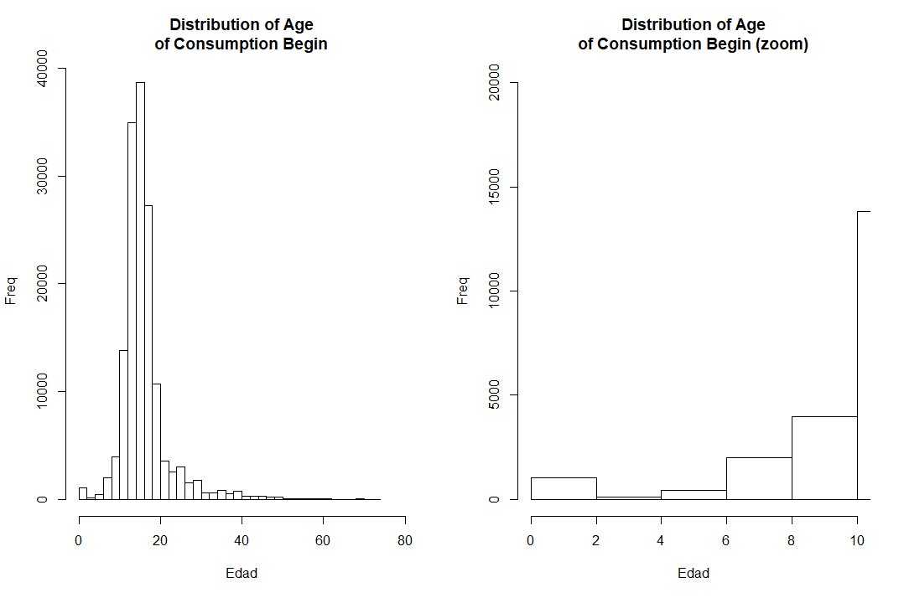
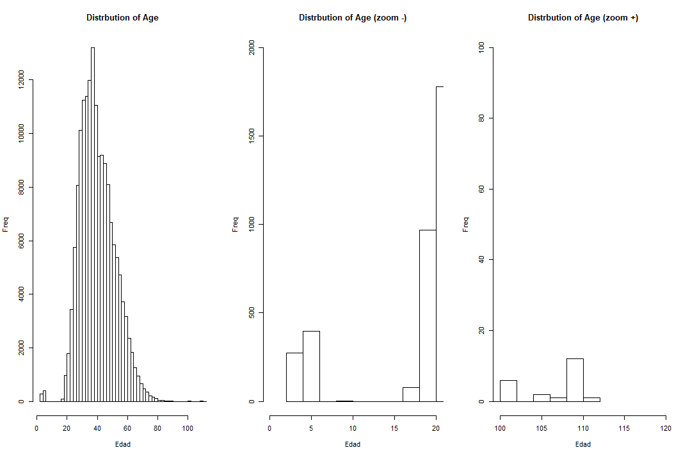
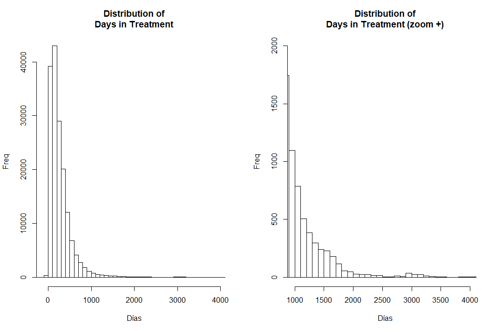

Data Preparation and Standardization
This page will be used to comment and understand the steps, advances and douts about the process of data preparations and standardization of the SISTRAT C1 (Convenio 1) which can be translated to Agreement on Collaboration, Technical Assistance and Transfer of Resources to General Population (“Convenio de Colaboración Técnica y de Transferencia de Recursos para Programa de Población General”). Must note that it does not include Adolescent criminal offenders (C2).
To see the TOP or Profile of Treatment Results (“Perfil de Resultados de Tratamiento”) datasets, go to this webpage.
### Building dataset
Define working directories which contains different text files that will be merged, correspondent to the years of the C1 Sistrat.
dir_c1 <-toString(paste0(getwd(),"/Encriptado c1/Personas tratadas c1/"))
dir_top <-toString(paste0(getwd(),"/encriptados TOP/"))Define files in the Directory folder, as long as they have the excel extension and they do not start with ~ (represent a working temporary file in excel)
SISTRAT_c1<-list.files(path=toString(dir_c1), all.files=T, pattern="^[2].*\\s*txt$")SISTRAT_c1 is composed by the following files: * 2010tab-Resultado-20191113 (1).txt * 2011tab -Resultado-20191113.txt * 2012tab-Resultado-20191113.txt * 2013tab-Resultado-20191113.txt * 2014tab-Resultado-20191113.txt * 2015tab-Resultado-20191113.txt * 2016tab-Resultado-20191113.txt * 2017tab-Resultado-20191113.txt * 2018tab-Resultado-20191113.txt * 2019_EneOcttab-Resultado-20191113.txt
Function to read tab delimited text files, with UTF-8 encoding and, based on the first 7 letters of its name, assign them an object name.
read_excel_mult <- function(dir, filename) {
assign(paste0(substr(filename, 1, 7)),read.delim(paste0(dir, filename),
na.strings="null", header = T, fileEncoding="UTF-8"),envir = .GlobalEnv)
}
#### Import datasets
To import the datasets, we apply the previous function to every dataset
for (x in SISTRAT_c1) {
read_excel_mult(as.character(dir_c1), x)
}
#### Normalize datasets
Normalize datasets by defining a common name for hash key’s (“HASH_KEY”) and assign them an standardized name.
tab_10_18_mod <- function(x,y) { get(x) %>% dplyr::rename("HASH_KEY" = !!names(.[91])) %>%
as.data.frame() %>%
assign(paste0(y, as.character(x)),.,envir = .GlobalEnv)
}
for (i in paste0(c(2010:2018),"tab")) {tab_10_18_mod(i,y="c1_")}
`2019_En` %>% dplyr::rename("HASH_KEY" = !!names(.[92])) %>%
as.data.frame() %>%
assign(paste0("c1_", "2019tab"),.,envir = .GlobalEnv)
#### Append the datasets
Once normalized column names. Bind every year’s datasets by their rows.
CONS_C1=rbindlist(mget(paste0("c1_",c(2010:2019),"tab")), idcol="TABLE", fill=T)
CONS_C1 <- CONS_C1 %>% dplyr::mutate(row=1:nrow(CONS_C1)) %>% dplyr::select(row,everything())
## Define and format variable names
Redefine variable names, create a column named ano_bd with the year. Also, it reorder the variables to get the identifiers as the first columns.
Rename Variables
CONS_C1 %>%
dplyr::rename(id=`Codigo.Identificación`) %>%
dplyr::rename(fech_ing=`Fecha.Ingreso.a.Tratamiento`) %>%
dplyr::rename(fech_egres=`Fecha.Egreso.de.Tratamiento`) %>%
dplyr::rename(dias_trat=`Dias.en.Tratamiento`) %>%
dplyr::rename(eva_consumo=`Evaluación.al.Egreso.Respecto.al.Patrón.de.consumo`) %>%
dplyr::rename(eva_fam=`Evaluación.al.Egreso.Respecto.a.Situación.Familiar`) %>%
dplyr::rename(eva_sm=`Evaluación.al.Egreso.Respecto.Salud.Mental`) %>%
dplyr::rename(eva_fisica=`Evaluación.al.Egreso.Respecto.Salud.Física`) %>%
dplyr::rename(eva_transgnorma=`Evaluación.al.Egreso.Respecto.Trasgresión.a.la.Norma.Social`) %>%
dplyr::rename(eva_relinterp=`Evaluación.al.Egreso.Respecto.Relaciones.Interpersonales`) %>%
dplyr::rename(eva_ocupacion=`Evaluación.al.Egreso.Respecto.a.Situación.Ocupacional`) %>%
dplyr::rename(evaluacindelprocesoteraputico=`Evaluación.del.Proceso.Terapéutico`) %>%
dplyr::rename(nmesesentratamiento=`N.Meses.en.Tratamiento`) %>%
dplyr::rename(motivodeegreso=`Motivo.de.Egreso`) %>%
dplyr::rename(tipo_centro=`Tipo.Centro`) %>%
dplyr::mutate(ano_bd=as.numeric(substr(TABLE,4,7))) %>%
select(row, TABLE, HASH_KEY,ano_bd, everything()) %>%
dplyr::arrange(id) %>%
assign("CONS_C1_df",.,envir = .GlobalEnv)Relevant variables are converted into factors.
CONS_C1_df %>%
dplyr::mutate(motivodeegreso=as.factor(motivodeegreso)) %>%
dplyr::mutate(evaluacindelprocesoteraputico=as.factor(evaluacindelprocesoteraputico)) %>%
dplyr::mutate(eva_consumo=as.factor(eva_consumo)) %>%
dplyr::mutate(eva_fam=as.factor(eva_fam)) %>%
dplyr::mutate(eva_relinterp=as.factor(eva_relinterp)) %>%
dplyr::mutate(eva_ocupacion=as.factor(eva_ocupacion)) %>%
dplyr::mutate(eva_sm=as.factor(eva_sm)) %>%
dplyr::mutate(eva_fisica=as.factor(eva_fisica)) %>%
dplyr::mutate(eva_transgnorma=as.factor(eva_transgnorma)) %>%
dplyr::mutate(sexo=as.factor(Sexo)) %>%
dplyr::mutate(embarazo=as.factor(`X.Se.trata.de.una.mujer.embarazada.`)) %>%
dplyr::mutate(tipo_de_plan=as.factor(`Tipo.de.Plan`)) %>%
dplyr::mutate(tipo_de_programa=as.factor(`Tipo.de.Programa`)) %>%
assign("CONS_C1_df",.,envir = .GlobalEnv)
#### Standardize Dates
Dates of admission and discharge
Most of the dates were not formatted equally. When standardized,some cases failed to transform dates, specifically in dates of discharge, which contained 87 cases, while only one case was problematic in admission dates.
CONS_C1_df %>%
dplyr::mutate(fech_ing= ifelse(row=="14504", "10/01/2011",fech_ing)) %>%
dplyr::mutate(fech_ing= lubridate::parse_date_time(fech_ing, c("%d/%m/%Y"),exact=T))
dplyr::mutate(fech_egres_sin_fmt= fech_egres) %>% #me quedo con esta variable por si acaso
dplyr::mutate(fech_egres= ifelse(row=="36308", "02/04/2013",
ifelse(row=="14083", "03/05/2011",
ifelse(row=="6349", "01/07/2010",
ifelse(row=="42741", "02/08/2013",
ifelse(row=="8608","01/02/2011",
ifelse(row=="11709","01/02/2011",
ifelse(row=="40486","03/07/2013",
ifelse(row=="42521","09/07/2013",
ifelse(row=="5757", "10/04/2010",
ifelse(row=="39507", "02/07/2013",
ifelse(row=="3195", "04/10/2010",
ifelse(row=="37845", "01/07/2013",
ifelse(row=="40180", "07/08/2013",
ifelse(row=="28008", "27/11/2012",
ifelse(row=="35971", "01/03/2013",
ifelse(row=="5172", "03/05/2011",
ifelse(row=="10415", "03/05/2011",
ifelse(row=="16385", "30/08/2011",
ifelse(row=="39932", "02/08/2013",
ifelse(row=="16983", "06/09/2011",
ifelse(row=="37004", "02/08/2013",fech_egres)))))))))))))))))))))) %>%
dplyr::mutate(fech_egres= lubridate::parse_date_time(stringr::str_trim(fech_egres),
orders = c("%d/%m/%Y", "%d/%m/%y","%d%m%Y"),exact=T)) %>%
dplyr::arrange(desc(ano_bd)) %>%
assign("CONS_C1_df",.,envir = .GlobalEnv)For discharge dates, many cases had different formats. Those had to be transformed once the first formats were traduced (e.g. 30-12-2019 is interpteted first as “%d/%m/%Y” format. If it is not traduced, it interprets in “DD/MM/YY” format (or “%d/%m/%y”). We can see in Table 1 in non-formatted date of discharge (fech_egres_sin_fmt), how was traduced into an official discharge date (fech_egres).
| Year | case | DischargeDate | DischargeDate-NoFmt |
|---|---|---|---|
| 2,013 | 36,308 | 2013-04-02 | 2013/04/02 |
| 2,013 | 42,741 | 2013-08-02 | 2082013 |
| 2,013 | 40,486 | 2013-07-03 | 307203 |
| 2,013 | 42,521 | 2013-07-09 | 9072013 |
| 2,013 | 39,507 | 2013-07-02 | 2072013 |
| 2,013 | 37,845 | 2013-07-01 | 1072013 |
| 2,013 | 40,180 | 2013-08-07 | 7082013 |
| 2,013 | 35,971 | 2013-03-01 | 01-03-2013 |
| 2,013 | 39,932 | 2013-08-02 | 2082013 |
| 2,013 | 37,004 | 2013-08-02 | 2082013 |
| 2,012 | 28,008 | 2012-11-27 | 27-11-2012 |
| 2,011 | 14,083 | 2011-05-03 | 30520011 |
| 2,011 | 11,709 | 2011-02-01 | 01-02-2011 |
| 2,011 | 10,415 | 2011-05-03 | 3052011 |
| 2,011 | 16,385 | 2011-08-30 | 30/08/20011 |
| 2,011 | 16,983 | 2011-09-06 | 06-09-2011 |
| 2,010 | 6,349 | 2010-07-01 | 01707/2010 |
| 2,010 | 8,608 | 2011-02-01 | 01-02-2011 |
| 2,010 | 5,757 | 2010-04-10 | 4102010 |
| 2,010 | 3,195 | 2010-10-04 | 4102010 |
| 2,010 | 5,172 | 2011-05-03 | 3052011 |
As we can see in Table 2, some non-formatted date of discharge (fech_egres_sin_fmt), had insufficient information to traduce into valid dates.
| Year | case | DischargeDate | DischargeDate-NoFmt |
|---|---|---|---|
| 2,011 | 12,006 | NA | 5 |
| 2,011 | 12,005 | NA | 5 |
| 2,011 | 12,227 | NA | 25 |
| 2,010 | 8,239 | NA | 15 |
| 2,010 | 9,043 | NA | 5 |
| 2,010 | 2,603 | NA | 20/0/2010 |
| 2,010 | 9,042 | NA | 5 |
| 2,010 | 194 | NA | 15 |
| 2,010 | 9,353 | NA | 25 |
Data Cleaning Steps provided by SENDA’s professional
This rules were provided by SENDA’s professionals, in order to select adequate data for the analysis.
#### 1- Exclude not SENDA treatments
In first place, we should discard treatments not provided by SENDA.
| SENDA | Frequency | % |
|---|---|---|
| No | 7,762 | 4.8% |
| Si | 155,382 | 95.2% |
| NA | 2 | 0% |
As we can see in Table 3, around 4.8% of cases had a treatment that could be not part of SENDA’s agreements.
2. Explore if the type of plan
It is necessary to explore if there is any case that may have a treatment under a probation/parole (“libertad vigilada”) plan.
## Warning: Factor `tipo_de_plan` contains implicit NA, consider using
## `forcats::fct_explicit_na`## Warning in melt.data.table(., id.vars = c(1:2)): 'measure.vars' [count,
## perc] are not all of the same type. By order of hierarchy, the molten data
## value column will be of type 'character'. All measure variables not of type
## 'character' will be coerced too. Check DETAILS in ?melt.data.table for more on
## coercion.| Type of Plan | No SENDA(n) | No SENDA(%) | Yes SENDA(n) | Yes SENDA(%) | NA (n) | NA (%) |
|---|---|---|---|---|---|---|
| CALLE | 5 | 0% | 10 | 0% | NA | NA |
| M-PAB | 6 | 0% | 109 | 0% | NA | NA |
| M-PAI | 137 | 2% | 10533 | 7% | NA | NA |
| M-PAI2 | NA | NA | 16 | 0% | NA | NA |
| M-PR | 251 | 3% | 7588 | 5% | NA | NA |
| M-PR2 | NA | NA | 10 | 0% | NA | NA |
| Otro | 1778 | 23% | 90 | 0% | NA | NA |
| PAI LV | NA | NA | 1 | 0% | NA | NA |
| PG-PAB | 2236 | 29% | 54075 | 35% | NA | NA |
| PG-PAI | 2233 | 29% | 66300 | 43% | NA | NA |
| PG-PR | 1116 | 14% | 16599 | 11% | NA | NA |
| PG PAI 2 | NA | NA | 50 | 0% | NA | NA |
| NA | NA | NA | 1 | 0% | 2 | 100% |
| * PR= Residential Program | ||||||
| † PAB= Basic Outpatient Program | ||||||
| ‡ PAI= Intensive Outpatient Treatment | ||||||
| § PAI LV= Probation/Parole | ||||||
| ¶ PAI= Intensive Outpatient Treatment |
Table 4 shows that there is only 1 case in the probation/parole plan.
3. Changes in programs
Change fixed residential, flexible residential and residential programmes into a general population residential program (PG PR). Additionally, flexible residential program cannot be under a probation/parole program.
Must note that there are some plans that have a number 2 but they do not contain more than 0% of the total of the datasets. Also there is some plans related to the Treatment of People Living on the Streets Programs (Programa de Tratamiento de Personas en Situación de Calle). For the moment, we are not sure what is the fixed and flexible residential programmes.
| Type of Program | CALLE | M-PAB | M-PAI | M-PAI2 | M-PR | M-PR2 | Otro | PAI LV | PG-PAB | PG-PAI | PG-PR | PG PAI 2 | NA |
|---|---|---|---|---|---|---|---|---|---|---|---|---|---|
| Libertad Vigilada | 0 | 0 | 0 | 0 | 0 | 0 | 0 | 0 | 0 | 2 | 0 | 0 | 0 |
| Otro | 0 | 0 | 3 | 0 | 3 | 0 | 890 | 0 | 32 | 35 | 12 | 2 | 0 |
| Programa Alcohol | 0 | 0 | 0 | 0 | 0 | 0 | 0 | 0 | 0 | 80 | 0 | 0 | 0 |
| Programa Calles | 15 | 0 | 0 | 0 | 0 | 0 | 0 | 0 | 0 | 0 | 0 | 0 | 0 |
| Programa Específico Mujeres | 0 | 115 | 9,741 | 16 | 7,590 | 10 | 7 | 0 | 19 | 48 | 3 | 16 | 0 |
| Programa Población General | 0 | 0 | 926 | 0 | 246 | 0 | 971 | 1 | 56,260 | 68,368 | 17,700 | 32 | 0 |
| NA | 0 | 0 | 0 | 0 | 0 | 0 | 0 | 0 | 0 | 0 | 0 | 0 | 3 |
#### 4. Plans within Alcohol Program
If there is a plan within the alcohol program, the plan must be modificated into the general population plan.
Every of the PG-PAI, 80 cases in the alcohol program are in the general population plan.
#### 5. Another Plan
If there is any plan correspondent to Another (“Otro”), it changes into a general population program.
There are 1868 cases with treatments categorized as Another (“Otro”) plan.
#### 6.Plan & Programs by Sex
Women should be in the M-PAI in they actually are cathegorized in the general population program.
As can be seen in Table 6, around 16% of women are in the general population programmes.Should be removed?
| Plan | Man (n) | Man (%) | Women (n) | Women (%) |
|---|---|---|---|---|
| CALLE | 12 | 0% | 3 | 0% |
| M-PAB | 0 | 0% | 115 | 0.1% |
| M-PAI | 86 | 0.1% | 10584 | 6.5% |
| M-PAI2 | 0 | 0% | 16 | 0% |
| M-PR | 68 | 0% | 7771 | 4.8% |
| M-PR2 | 0 | 0% | 10 | 0% |
| Otro | 1305 | 0.8% | 563 | 0.3% |
| PAI LV | 1 | 0% | 0 | 0% |
| PG-PAB | 44527 | 27.3% | 11784 | 7.2% |
| PG-PAI | 54142 | 33.2% | 14391 | 8.8% |
| PG-PR | 17057 | 10.5% | 658 | 0.4% |
| PG PAI 2 | 27 | 0% | 23 | 0% |
| NA | 3 | 0% | 0 | 0% |
| * PR= Residential Program | ||||
| † PAB= Basic Outpatient Program | ||||
| ‡ PAI= Intensive Outpatient Treatment | ||||
| § PAI LV= Probation/Parole | ||||
| ¶ PAI= Intensive Outpatient Treatment |
There are still a few doubts about these criteria: - Why there is men and women with female gender identity that are in the general population?, (Basic outpatient (22 men; 690 women), intensive outpatient (33 men; 1098 women), Residential (5 men; 26 women) and Outpatient 2 (12 women)? - Should the 2 men and 12 women in M-PAI but with masculine gender identity be in general population (PG PAI)? - If in M-PR there is a women with masculine gender identity, should not be in the general population (PG_PR)?
#### 7.Plan & Programs by Sex
Only plans “M-PAI”, “M-PR”, “PG-PAB”, “PG-PAI” and “PG-PR” must be preserved. Considering Table 4, what happens with M-PAB (basic outpatient for women), “Calle”, “PG PAI 2”, “M-PAI2”, “M-PR2”, “PAI LV” or another (“Otro”)? (See Table 4)
#### 8.Age of consumption begin
Treat as missing data the age of consumption begin if it is less than 5 years.
par(mfrow = c(1,2))
hist(CONS_C1_df$Edad.Inicio.Consumo, main="Distribution of Age\nof Consumption Begin",
xlab="Age", ylab="Freq", breaks=30, xlim=c(0,80))
hist(CONS_C1_df$Edad.Inicio.Consumo, main="Distribution of Age\nof Consumption Begin (zoom)",
xlab="Age", ylab="Freq", breaks=30, xlim=c(0,10), ylim=c(0,20000))
Figure 1. Histogram of Age of Consumption Begin
include_graphics(paste0(path,"/Figures/Fig1.png"))
CONS_C1_df %>%
dplyr::filter(Edad.Inicio.Consumo<5) %>%
dplyr::summarise(n())There is around 1,117 cases with less than 5 years in the consumption begin.
#### 9.Delete duplicated cases (same date of admission and ID)
In this case, we included the HASH-KEY as another and more robust criteria to filter duplicate cases.
CONS_C1_df %>%
mutate(concat=paste0(as.character(id),"_",fech_ing,"_",as.character(HASH_KEY))) %>%
dplyr::filter(duplicated(concat)) %>%
dplyr::arrange(concat) %>%
dplyr::select(concat, everything()) %>%
dim()
length(which(duplicated(CONS_C1_df[c('id', 'fech_ing','HASH_KEY')]),) )
data.frame(table(with(CONS_C1_df, ifelse(duplicated(CONS_C1_df[c('id', 'fech_ing','HASH_KEY')]), 0, 1))),
`%`=paste0(round(prop.table( table(with(CONS_C1_df,
ifelse(duplicated(CONS_C1_df[c('id', 'fech_ing','HASH_KEY')]), 0, 1)))),3)*100,"%")) %>%
pander::pandoc.table(., split.tables=Inf, style='rmarkdown')Table 7. Duplicated cases
| Frequencies | Percentage | |
|---|---|---|
| Duplicates | 45445 | 27.9% |
| Not duplicates | 117701 | 72.1% |
As seen in Table 7, there is more than a quarter of cases that may be replicating across the different datasets.
#### 10.Actual Age
Consider as missing age if it is less than 18 years and greater than 90.
par(mfrow = c(1,3))
hist(CONS_C1_df$Edad, main="Distrbution of Age",
xlab="Edad", ylab="Freq", breaks=60)
hist(CONS_C1_df$Edad, main="Distrbution of Age (zoom -)",
xlab="Edad", ylab="Freq", breaks=60, xlim=c(0,20), ylim=c(0,2000))
hist(CONS_C1_df$Edad, main="Distrbution of Age (zoom +)",
xlab="Edad", ylab="Freq", breaks=60, xlim=c(100,120), ylim=c(0,100))
dev.off()Figure 2. Histogram of Actual Age
include_graphics(paste0(path,"/Figures/Fig2.png"))
CONS_C1_df %>%
dplyr::filter(Edad<18) %>%
dplyr::summarise(n())
CONS_C1_df %>%
dplyr::filter(Edad>90) %>%
dplyr::summarise(n())There are 673 cases with less than 18 years, 24 cases with more than 90 years.
#### 11. Days In Treatment
Consider as missing if cases has more than 1095 days. Do the same for months in treatment.
par(mfrow = c(1,2))
hist(CONS_C1_df$dias_trat, main="Distribution of\nDays in Treatment",
xlab="Días", ylab="Freq",xlim=c(-100,4100), breaks=60)
hist(CONS_C1_df$dias_trat, main="Distribution of\nDays in Treatment (zoom +)",
xlab="Días", ylab="Freq", breaks=60, xlim=c(1000,4100), ylim=c(0,2000))
dev.off()
#values out of boundaries
CONS_C1_df %>%
dplyr::filter(dias_trat>1095) %>%
dplyr::summarise(n())
CONS_C1_df %>%
dplyr::filter(dias_trat<0) %>%
dplyr::summarise(n())As seen in Figure 3, there are 2320 cases with more than 1095 days in treatment. On the other hand, there are 12 cases with negative days of treatment. Should be removed?
Figure 3. Histogram of Days In Treatment
include_graphics(paste0(path,"/Figures/Fig3.png"))
#### 12. Pregnancy and Sex
Pregnant men should be considered as missing values. As seen in Table 8, 4 cases of men also reported pregnancy.
data.frame(table(CONS_C1_df$embarazo, CONS_C1_df$Sexo, exclude=NULL),
`%`=paste0(round(prop.table(table(CONS_C1_df$embarazo, CONS_C1_df$Sexo, exclude=NULL)),3)*100,"%")) %>%
as.data.frame() %>%
reshape::melt( id.vars = c("Var1", "Var2")) %>%
reshape::cast(.,Var1~Var2+variable) %>%
pander::pandoc.table(., split.tables=Inf, style='rmarkdown')Table 8. Pregnancy by Sex
| Pregnant | Men (n) | Men (%) | Women (n) | Women (%) |
|---|---|---|---|---|
| No | 9,515 | 5.8% | 43,466 | 26.6% |
| Si | 4 | 0% | 2,430 | 1.5% |
| NA | 107,709 | 66% | 22 | 0% |
#### 13. Type of plan and Sex
See plans M-PR and M-PAI . Check if there are men. Keep if they are, but they identify as women. **This should also be checked reversly?
As seen in table 9, must note that many cases do not answer this question, or what could be more plausible, this question could not be present in previous datasets. This is why we may exclude NA’s (missing values) for the following analysis.
data.frame(table(CONS_C1_df$identidad.de.genero, CONS_C1_df$Sexo, exclude=NULL),
`%`=paste0(round(prop.table(table(CONS_C1_df$identidad.de.genero, CONS_C1_df$Sexo, exclude=NULL)),3)*100,"%")) %>%
as.data.frame() %>%
reshape::melt( id.vars = c("Var1", "Var2")) %>%
reshape::cast(.,Var1~Var2+variable) %>%
pander::pandoc.table(., split.tables=Inf, style='rmarkdown')Table 9. Sex by Gender Identity
| Var1 | Men (n) | Men(%) | Women(n) | Women(%) |
|---|---|---|---|---|
| Femenine | 65 | 0% | 3,249 | 2% |
| Masculine | 8,012 | 4.9% | 60 | 0% |
| NA | 109,151 | 66.9% | 42,609 | 26.1% |
In Table 10, can be seen that there are 2 men with a masculine gender identity that are suscribed to M-PAI plan. However, what happens with the 12 women with masculine gender identity in M-PAI plan?
CONS_C1_df %>%
dplyr::group_by(as.factor(identidad.de.genero),as.factor(Sexo), as.factor(tipo_de_plan)) %>%
dplyr::filter(!is.na(as.factor(identidad.de.genero))) %>%
dplyr::summarise(count = n() ) %>%
dplyr::mutate(perc = paste0(round(100 * count/sum(count), 0), "%")) %>%
dplyr::rename(tipo_plan = `as.factor(tipo_de_plan)`, sexo = `as.factor(Sexo)`, id_gen=`as.factor(identidad.de.genero)`) %>%
data.table() %>%
reshape::melt( id.vars = c(1:3)) %>%
#reshape::cast(.,as.factor(tipo_de_plan)~variable+as.factor(Sexo)) %>%
reshape::cast(.,tipo_plan~sexo+id_gen+variable) %>%
dplyr::rename("Fem.-Men(n)" = `Hombre_Femenino_count`, "Masc.-Men(n)" = `Hombre_Masculino_count`,
"Fem.-Women(n)"=`Mujer_Femenino_count`,"Masc.-Women(n)"=`Mujer_Masculino_count`,
"Fem.-Men(%)"=`Hombre_Femenino_perc`, "Masc.-Men(%)"=`Hombre_Masculino_perc`,
"Fem.-Women(%)"= `Mujer_Femenino_perc`,"Masc.-Women(%)"=`Mujer_Masculino_perc`) %>%
pander::pandoc.table(., split.tables=Inf, style='rmarkdown')Table 10. Type of Plan by Gender Identity and Sex
| Plans | Fem.-Men(n) | Fem.-Men(%) | Masc.-Men(n) | Masc.-Men(%) | Fem.-Women(n) | Fem.-Women(%) | Masc.-Women(n) | Masc.-Women(%) |
|---|---|---|---|---|---|---|---|---|
| M-PAI | 2 | 3% | 2 | 0% | 877 | 27% | 12 | 20% |
| M-PAI2 | NA | NA | NA | NA | 16 | 0% | NA | NA |
| M-PR | 2 | 3% | NA | NA | 505 | 16% | 1 | 2% |
| M-PR2 | NA | NA | NA | NA | 10 | 0% | NA | NA |
| Otro | 1 | 2% | 25 | 0% | 15 | 0% | NA | NA |
| PG-PAB | 22 | 34% | 2,688 | 34% | 690 | 21% | 19 | 32% |
| PG-PAI | 33 | 51% | 4,060 | 51% | 1,098 | 34% | 28 | 47% |
| PG-PR | 5 | 8% | 1,212 | 15% | 26 | 1% | NA | NA |
| PG PAI 2 | NA | NA | 25 | 0% | 12 | 0% | NA | NA |
{: .emphasized .table_wrapper}
#### 14.Days of treatment
Consider as missing days if theres values 0 and negatives.
CONS_C1_df %>%
dplyr::filter(dias_trat<1) %>%
dplyr::summarise(n())There is 280 values 0 or negative.
#### 15.Age of Consumption Begin and Actual Age
Consider the age of consumption begin as missing data if it is greater than the actual age.
CONS_C1_df %>%
dplyr::mutate(edad_inicio_cons= ifelse(Edad.Inicio.Consumo>Edad, 1, 0)) %>%
dplyr::filter(edad_inicio_cons==1) %>%
dplyr::select(row,id,HASH_KEY,Edad.Inicio.Consumo, Edad) %>%
dim()In 780 cases the age of consumption begin is greater than the actual age.
See here for duplicates treatment.em tag OR